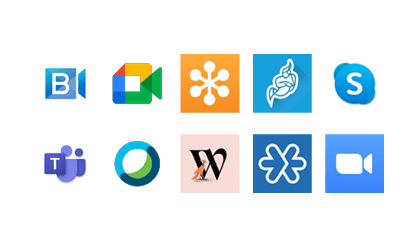
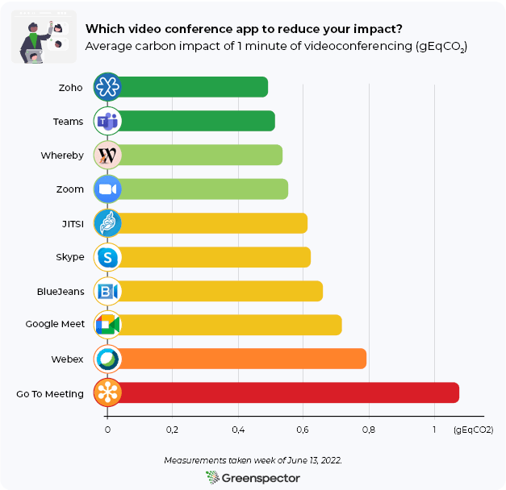
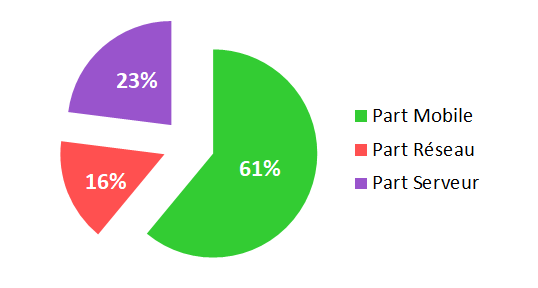
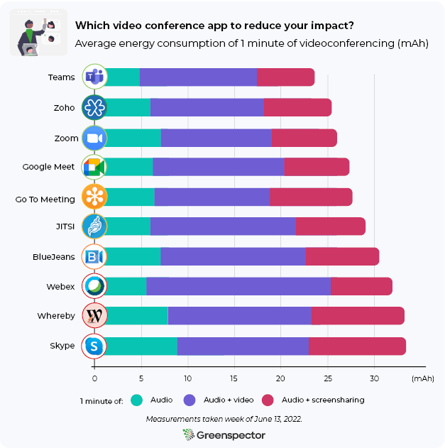
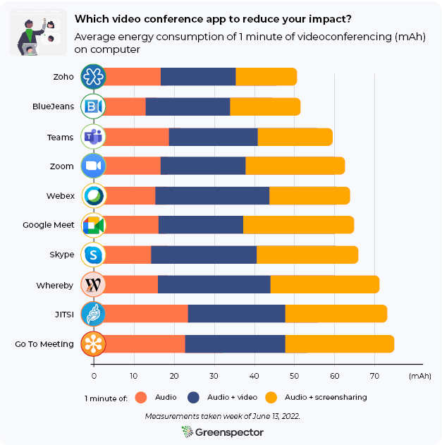
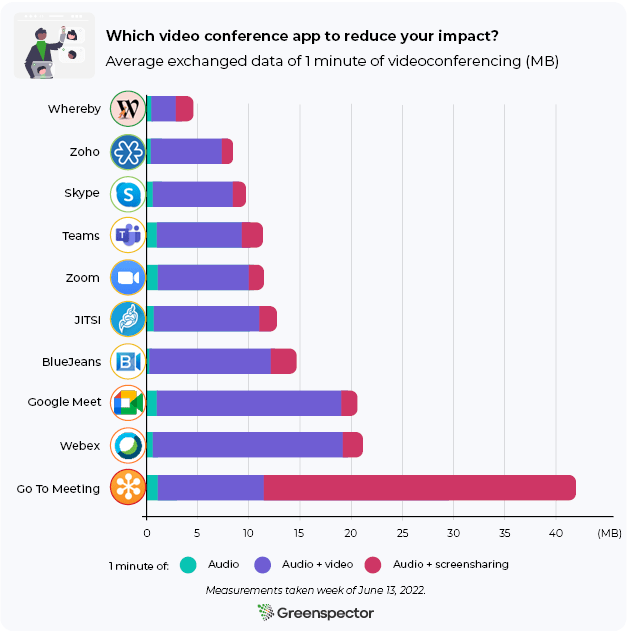

We have decided to proceed differently for this year’s ranking 2022. Unlike the 2021 edition, we have reduced the number of applications measured. We have both taken measurements on the phone and also on the PC to meet demand. It is the purpose of these new measures to compare how the solutions stack up in terms of environmental impact (Carbon) on different user scenarios but also on two platforms: PCs and phones.
We compared 10 apps: BlueJeans, Google Meet, Go To Meeting, JITSI, Skype, Teams, Webex, Whereby, Zoho Meetings et Zoom.

For each of its applications, measured on an S7 smartphone (Android 8) and on a computer, the following three scenarios were carried out through our Greenspector Test Runner, allowing manual tests to be carried out over a period of 1 minute in one- one-to-one: :
- Audio conference only
- Audio and video conferencing (camera activated on both sides)
- Audio conferencing and screen sharing
Learn more about the methodology.
Projected ranking in the carbon impact of videoconferencing apps (gEqCO2) on mobile

| Scenario / Year | 1 min audio videoconference | 1 min audio + camera videoconference | 1 min audio + screen sharing videoconference |
|---|---|---|---|
| 2022 | 0.31 gEqCO2 | 1.10 gEqCO2 | 0.54 gEqCO2 |
| Equivalent in meters travelled in a light vehicle | 2,76 meters | 9,82 meters | 4,82 meters |
Audio video conferencing has an average impact of 71% less than cameras active and 42% less than sharing a screen.
The Top 3 of one minute of videoconference on average: Zoho Meeting (0.49 gEqCO2), Microsoft Teams (0.513 gEqCO2) and Whereby (0.533 gEqCO2). Zoho Meeting, first in this ranking on the carbon impact side, has an impact 2.2 times less than GoToMeeting, the last in this ranking. The average of this ranking is 0.657 gEqCO2, 4 solutions are above.
The main part of the Carbon impacts is on the user device part (61%), followed by the Server part (23%) and finally the Network part (16%).

Here are the three mobile applications with the least impact in terms of Carbon according to the scenario:
| Audio (Top 3) | Audio + camera (Top 3) | Audio + Screen Sharing (Top 3) |
|---|---|---|
| Microsoft Teams | Whereby | Microsoft Teams & Zoho Meeting |
| Cisco Webex Meeting | Zoho Meeting | Zoom & Google Meet |
| JITSI Meet | Teams & Zoom | Cisco Webex Meeting |
Energy consumption of videoconferencing apps (mAh) on mobile

Here are the power consumption averages for the three phone scenarios:
| Scenario / Year | 1 min audio videoconference | 1 min audio + camera videoconference | 1 min audio + screen sharing videoconference |
|---|---|---|---|
| 2022 | 6.68 mAh | 14.29 mAh | 7.82 mAh |
A single minute of audio video conference consumes 53% less energy (or 2.1 times less) than with cameras activated, and 14.5% less than sharing a screen.
Energy consumption of videoconferencing apps (mAh) on PC

Here are the computer energy consumption averages:
| Average: 1mn of audio videoconference | Average: 1mn of audio + camera videoconference | Average: 1mn of audio + scree sharing videoconference |
|---|---|---|
| 17.25 mAh | 23.65 mAh | 22.82 mAh |
Here, one minute of audio video conferencing consumes 27% less (or 1.4 times less) energy than with cameras activated and 24% less than sharing a screen. Therefore, depending on the scenario, we see a much more significant difference in energy consumption on the telephone.
Zoho Meeting (76.21 mAh), BlueJeans (81.70 mAh) and Microsoft Teams (83 mAh) are the top 3 in energy consumption (all scenarios combined). First in this ranking in terms of energy consumption, Zoho Meeting consumes 1.4 times less energy than the last.
Here are the three mobile applications with the least impact in terms of Carbon according to the scenario:
| Audio (Top 3) | Audio + camera (Top 3) | Audio + Screen Sharing (Top 3) |
|---|---|---|
| Blue Jeans | Zoho Meeting | Zoho Meeting |
| Cisco Webex Meeting | Zoom | Teams |
| Google Meet | Teams | BlueJeans |
Exchanged data from videoconferencing apps (MB) on mobile

Here are the averages of the data exchanged for the three scenarios:
| Scenario / Year | 1 min audio videoconference | 1 min audio + camera videoconference | 1 min audio + screen sharing videoconference |
|---|---|---|---|
| 2022 | 0,88 MB | 10,34 MB | 4,49 MB |
Data consumption is where the gap between tools and uses is widening.
On average, one minute of audio video conferencing consumes 91% less (or 12 times less) data exchanged than with activated cameras and 80% less than sharing a screen.
The Top 3 (all scenarios combined) in data exchange: Whereby (4.54 MB), Zoho Meeting (8.39 MB) and Skype (9.68 MB). Whereby (via Firefox) first in this ranking in terms of data exchanged consumes 9.2 times less than the last in this ranking: GoToMeeting.
Here are the three least data-consuming apps according to the scenario:
| Audio (Top 3) | Audio + camera (Top 3) | Audio + Screen Sharing (Top 3) |
|---|---|---|
| Blue Jeans | Whereby | Zoho Meeting |
| Zoho Meeting | Zoho Meeting | Skype |
| Whereby | Skype | Zoom |
For our daily use of videoconferencing:
In the study carried out in 2021, we indicated that videoconferencing is preferable to travelling by car. Indeed, this solution is less polluting, however, beware of rebound effects! Since the global pandemic, working from home has become widespread in many companies, but this practice encourages more people to live away from their workplaces. As a result, the environmental benefits of working from home can be offset depending on the pace of remote working and the means of transport used.
In addition, it is necessary to draw attention to the increase in energy consumption of the generated hearths. It is possible that this increase might compensate for the drop in energy needs on business premises, but this must be considered on a case-by-case basis.
Examples:
- Office vs Home Working: How we can save our carbon footprint.
- Comment réduire son empreinte écologique au travail ? (French language)
- Le télétravail est-il vraiment meilleur pour l’environnement ? (French language)
Measured versions:
- Microsoft Teams (4.10.1) / computer (1.5.00.10453)
- Zoom (5.10.4) / computer (5.10.7.3311)
- Google Meet (2022.05.15.450927857) / light version on Firefox
- Cisco Webex Meetings (42.6.0.239) / computer (42.5.0.22187)
- GoToMeeting (4.8.1) / light version on Chrome
- BlueJeans (2.2.0.142) / computer (2.29.1-3)
- Skype (8.82.0.403) / computer (8.83.0.411
- Whereby (2.3.0) / light client on Firefox
- Zoho Meeting (2.2.1) / light version on Firefox
- Jitsi Meet (21.3.0)/ light version on Firefox
For each of its applications, measured on an S7 smartphone (Android 8), user scenarios were carried out using our Greenspector Test Runner, allowing manual tests.
Once the app is downloaded and installed, we run our measurements on the app’s baseline and original settings. No changes are made (even if some options allow you to reduce energy or resource consumption: data saving mode, dark theme, etc. However, we encourage you to check the settings of your favourite application in order to optimize its impact.
The average of five homogeneous measurements (with a low standard deviation) is used for each measurement. The consumption measured on the given smartphone according to a Wi-Fi type network may be different on a laptop PC with a wired network for example. For each of the iterations, the cache is first emptied.
As for computer measurements, the Yocto-Watt from YoctoPuce was used to measure energy consumption. In the same way as for mobile applications, heavy clients, when one existed, were downloaded and then installed without changing the basic parameters. This chip, therefore, only allows you to have energy consumption, which is why the carbon impact and the data exchanged in this article only concern the telephone part. Additional resource on the Yoctopuce.
Find out how Greenspector assesses the environmental footprint of using a digital service. (Full methodology)